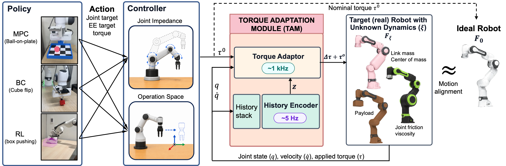
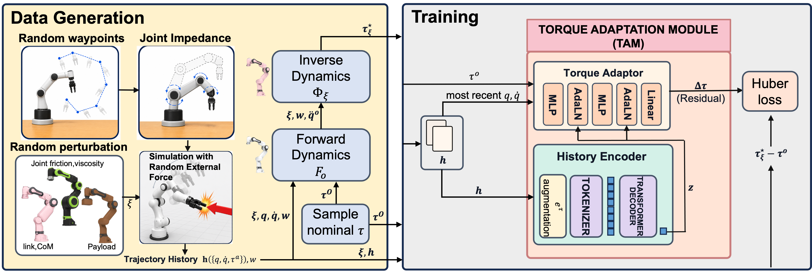

Direct transfer
Friction dominates on the real Franka, so small torques fail to overcome static friction and the motion gets stuck.
A policy tuned for one robot often behaves differently on another, whether due to the sim-to-real gap, unknown payloads, or differing dynamics across nominally identical robots. In contact-rich, dynamic manipulation, even small motion discrepancies can break the timing and modes of contact.
We introduce the Torque Adaptation Module (TAM), a learned module that adapts torque commands to match the behavior of an ideal robot. TAM operates between the low-level controller and the robot torque interface, using proprioceptive history to compute residual torque corrections.
Because TAM does not depend on policy observations, rewards, or action spaces, the same TAM weights can be reused across policies with joint targets, end-effector targets, or direct torques. We train TAM entirely in randomized simulation and evaluate it zero-shot on a real Franka Panda robot across dynamic manipulation tasks with unknown payloads.

TAM is inserted after the low-level controller and before the robot plant. Policies such as MPC ball balancing, BC cube flipping, and RL box pushing keep their original action spaces, while TAM uses robot-side proprioceptive history to infer the current mismatch and add residual torque corrections at the hardware control rate.

TAM is trained from task-agnostic free-space joint-motion rollouts rather than downstream task demonstrations. Randomized robot parameters and synthetic waypoint references produce histories, analytic dynamics labels provide teacher torques, and the model learns the residual torque needed to make the perturbed robot match the ideal model response.
All videos are shown in real time (1x playback speed).
Vision-based RL box pushing with direct transfer, system identification, and TAM.
Friction dominates on the real Franka, so small torques fail to overcome static friction and the motion gets stuck.
System identification partially compensates for dynamics mismatch.
The adapted torque command improves transfer of the pushing policy.
Reference pushing behavior in the ideal simulator.
Continuous execution of the transferred pushing behavior with TAM by resetting goal box pose after reaching.
BC cube flipping from demonstrations generated in ideal simulation, evaluated with direct policy transfer and TAM.
The transferred flip executes directly on the robot.
TAM adjusts torques while leaving the policy interface unchanged.
MPC controller execution for centering the ball on the plate, with the MPC designed in ideal simulation.
The ball takes longer to converge to the center because motion mismatch affects the realized plate motion.
Torque adaptation improves the realized plate motion.
Following predefined waypoints with an operational-space controller under unknown 1 kg and 2 kg payloads.
Payload mismatch shifts the realized motion away from the reference.
TAM compensates for the unknown payload during tracking.
The heavier payload increases the tracking error.
The same adaptation module improves the heavier-payload case.